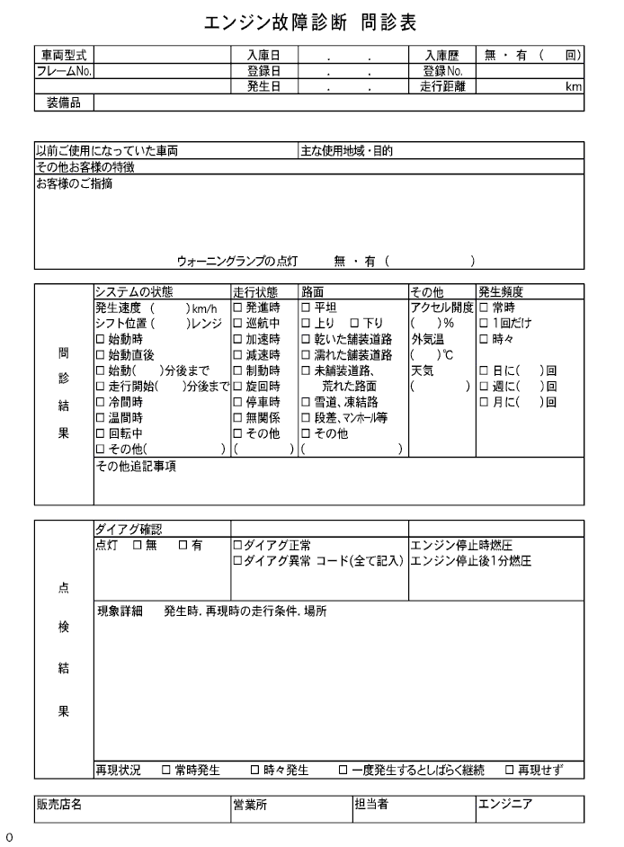

ECU制御システムのトラブルシューティングの方法 問診表からの不具合分析
印刷
トラブルシューティング時、不具合現象を正確に確認し、正確な判断をする為にも先入観はもたないこと。不具合現象を確認するために、不具合が発生した時の状況を顧客に尋ねることが大変重要になる。
下記の5項目は不具合分析をする上で大切な点である。過去に起きた関係ないと思われるような不具合や修理履歴など時には役立つ場合もあるので、出来るだけ多く集め、不具合現象との関係を正確に把握することがトラブルシューティングをする上で必要である。 問診表を各システムの診断セクションに記載する。
何が-車両型式、システム名
いつ-日時、頻度
どこ-進路状況
状況-走行状態、天気
どのようにして起きたか-不具合現象
